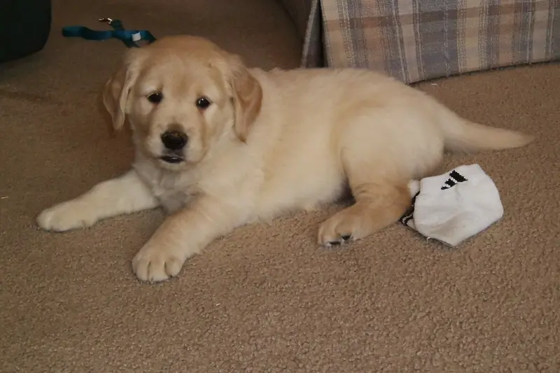
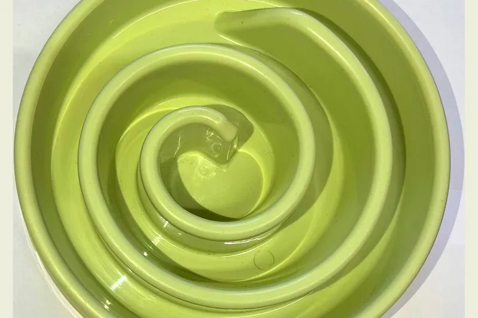
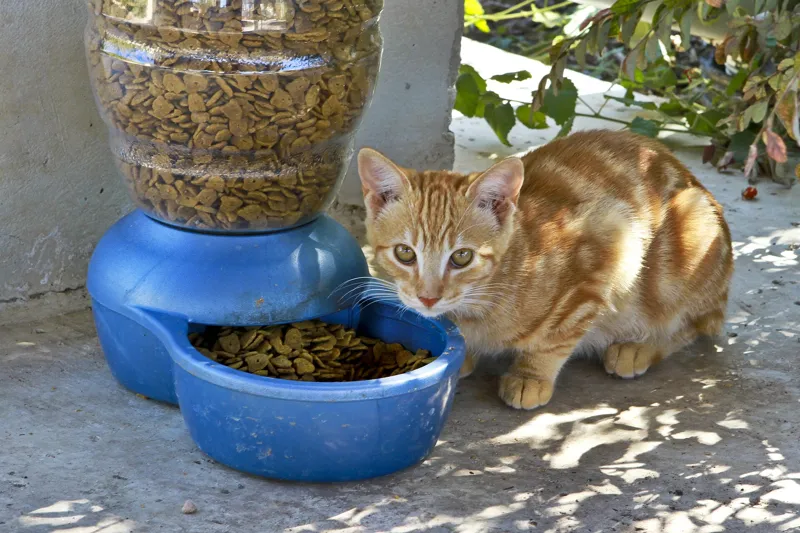

🐾 Friendly answers, fast
Questions about your cat or dog? Start here.
Short, clear answers with vet red flags up front. Look it up, then call your vet if anything worries you.
⚠️ Not veterinary advice. If your pet is sick or hurt, contact a vet.
Popular questions
DogCan dogs eat chocolate?→CatAre lilies poisonous to cats?→ CatWhy is my cat throwing up?→
CatWhy is my cat throwing up?→

DogCan dogs eat grapes?→CatWhy is my cat throwing up?→
DogHow often should I feed my dog?→
CatWhy is my cat not eating?→No match yet. Try another word.